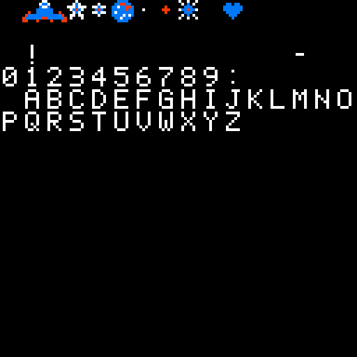

Example game: Star Catcher
A small NES game written for this documentation, code and graphics alike: about 700 lines of 6502 assembly, a Python script that draws the tiles, and a config.json that puts them together into a 24,592-byte ROM. Every example on these pages comes from it. This page shows how to build and play it, how the project is laid out, how the graphics are made, and walks through the code.
The game
A ship moves along the bottom of a starfield. Stars and meteors fall from the top: catch the stars, avoid the meteors. Each star is a point, and every ten points the sky gets busier. Three meteors and the game is over. The code and the graphics are original (no tile, sound or routine is borrowed from another game) and may be reused freely.


tools/screenshots/shoot-game.ps1: an autopilot written in Lua plays the game in Mesen2, steering under the lowest star and never dodging a meteor (see tools/screenshots).Build and play
From the example_star_catcher folder, any of these builds the ROM, star_catcher.nes:
compile.bat # deletes the previous outputs, then WinASM65 -l -c config.json
WinASM65 -l -c config.json # the same build by hand; -l also writes src\*.lstRun the command line from the project folder: on the command line the paths of config.json are relative to the current directory (see the config.json reference). Open the ROM in Mesen2, or any NES emulator: mapper 0, 16 KB of program, 8 KB of tiles.
In VS Code with the WinASM65 extension, open the folder and press F5: the extension finds config.json, builds the project and starts Mesen2 with the debugger attached. The committed config.json has no Emulator section, so tell the extension where Mesen2 is with the winasm65.emulatorPath setting (or emulatorPath in launch.json). A breakpoint on line 134 of src/game.asm stops at the start of every frame, as on the VS Code page.
| Button | Does |
|---|---|
| START | On the title screen, starts a game. On the game over screen, after two seconds (120 frames), goes back to the title. |
| Left, Right | Moves the ship two pixels per frame, between x = 8 and x = 232. |
| Up, Down, A, B, SELECT | Read, but not used. |
The rules, as the code has them: at most six objects fall at once, one appears every 60 frames at first, and each falls one or two pixels per frame. About one object in four is a meteor. Every ten points the delay between two objects drops by 8 frames, down to 20. A meteor that touches the ship costs a life and makes the ship blink for 48 frames. The score has four decimal digits.
The project
| File | What it is |
|---|---|
config.json | The project: three units, combined with the tiles into the ROM. |
compile.bat | Deletes src\*.o, src\*.symb, src\*.lst and the ROM, then builds with listings. |
src/header.asm | The 16-byte iNES header. |
src/game.asm | The game: start-up, main loop, NMI, ship, falling objects, score, sound, data. |
src/nes.inc | NES registers, buttons and two macros, included by game.asm. Not a unit of its own. |
src/vectors.asm | The NMI, RESET and IRQ vectors. |
chr/make_chr.py | Draws every tile as ASCII art and writes chr/tiles.chr. |
chr/tiles.chr | The 8 KB of tiles, generated and committed. |
config.json
{
"Input": [
{
"FileName": "src/header.asm",
"Dependencies": []
},
{
"FileName": "src/game.asm",
"Dependencies": []
},
{
"FileName": "src/vectors.asm",
"Dependencies": ["src/game.asm"]
}
],
"Output": {
"ObjectFile": "star_catcher.nes",
"Files": [
{
"FileName": "src/header.o",
"Size": "$10"
},
{
"FileName": "src/game.o",
"Size": "$3FFA"
},
{
"FileName": "src/vectors.o"
},
{
"FileName": "chr/tiles.chr"
}
]
}
}Inputlists the three units. Each is assembled on its own into an object file beside its source:src/header.o,src/game.o,src/vectors.o.game.asmalso writessrc/game.symb, the JSON table of its global names.Outputputs four files end to end.header.ois already 16 bytes, so its"Size": "$10"only guards against a header that grows.game.oholds 1,243 bytes, assembled from.org $C000;"Size": "$3FFA"(always hexadecimal) pads it with zeros to 16,378 bytes, so that the six bytes ofvectors.ofall on$FFFA–$FFFF, the last six bytes of the 16 KB bank.chr/tiles.chris taken as it is.- There is no
Targetsection: the target israwand the image is written exactly as concatenated, header included. The complete config.json example builds the same ROM with aTargetsection that writes the header instead.
Why vectors.asm depends on game.asm
.org $FFFA
.word NMI ; once per frame, at the start of the vertical blank
.word RESET ; at power-on and reset
.word IRQ ; not usedNMI, RESET and IRQ are labels of game.asm. Units are assembled separately, so while vectors.asm is assembled it does not know them: it emits three placeholder words. Its "Dependencies": ["src/game.asm"] lets it read src/game.symb in the second phase of the build, where it finds "NMI":49262, "RESET":49152 and "IRQ":49310 and patches the words to 6E C0 00 C0 9E C0. Without the dependency the build stops with Line 0 - File src/vectors.asm - Type Undefined symbol. The order of Input does not matter: every unit is assembled before any is resolved. See How units are resolved.
header.asm needs nothing from the others: it is the header, byte by byte.
.org $0000
.byte "NES", $1A
.byte 1 ; 1 x 16 KB of program ROM
.byte 1 ; 1 x 8 KB of character ROM (the tiles)
.byte %00000001 ; mapper 0 (NROM), vertical mirroring
.byte 0
.dsb 8 ; unused, zeroThe graphics
The NES draws everything from 8×8 tiles stored in the cartridge's character ROM. Each pixel of a tile is a number from 0 to 3; the palette the tile is shown with turns that number into a colour, and 0 is transparent (or the background colour). chr/make_chr.py draws every tile as eight strings of eight characters and encodes them. . is colour 0, 1, 2 and 3 the other three. The ship is two tiles side by side, cut from one 16-pixel drawing:
SHIP = [
".......11.......",
"......1221......",
"......2112......",
".....222222.....",
"..3..222222..3..",
".32222222222223.",
"3222222332222223",
"33...3....3...33",
]
TILES[0x01] = [row[:8] for row in SHIP]
TILES[0x02] = [row[8:] for row in SHIP]Two bit planes
A tile takes 16 bytes: eight bytes that hold bit 0 of each pixel, one byte per row with the leftmost pixel in bit 7, then eight bytes that hold bit 1. encode does just that:
def encode(tile):
"""The 16 bytes of a tile: 8 bytes of bit 0 of each pixel, then 8 of bit 1."""
assert len(tile) == 8 and all(len(row) == 8 for row in tile), tile
low, high = [], []
for row in tile:
lo = hi = 0
for pixel in row:
value = 0 if pixel == "." else int(pixel)
lo = (lo << 1) | (value & 1)
hi = (hi << 1) | (value >> 1)
low.append(lo)
high.append(hi)
return bytes(low + high)Tile n goes at offset n × 16. Pattern table 0, the first 4 KB, holds every tile the game uses, for the background and the sprites alike (PPUCTRL is set to %10000000: NMI on, both from table 0). Pattern table 1 stays empty, which makes 8 KB, one CHR bank.
Letters at their ASCII codes
The font has 5×7 glyphs for the digits, the capital letters and !, - and :, each stored at the tile number equal to its ASCII code, with one empty column on the left and one empty row below. "0" is tile $30, "A" tile $41, and the space, $20, is a tile left empty. So a string in the source is already a row of tiles: .asciiz "SCORE" emits 53 43 4F 52 45 00, and those are the tiles of S, C, O, R, E. Digits work the same way, so the score is drawn by adding '0' to each digit.
The other tiles: $01–$02 the ship, $03–$04 the two frames of a twinkling star, $05 the meteor, $06–$07 two distant stars for the background, $08 a burst (drawn, but not used by the code yet), $0A the heart. python chr/make_chr.py --png sheet.png writes a picture of the whole table:


make_chr.py --png. The preview uses fixed colours (black, white, yellow, orange) for the values 0 to 3, not the game's palettes.Palettes
The game loads 32 bytes into the PPU at $3F00: four palettes for the background, four for the sprites. Each entry is a colour number of the NES's fixed palette, and $0F (black) is the shared colour 0.
Palettes:
.byte $0F, $30, $16, $28 ; background: white text, red heart, yellow stars
.byte $0F, $30, $16, $28
.byte $0F, $30, $16, $28
.byte $0F, $30, $16, $28
.byte $0F, $30, $11, $16 ; ship: white, blue, red
.byte $0F, $28, $38, $30 ; stars: yellow, pale yellow, white
.byte $0F, $07, $17, $27 ; meteors: dark brown, brown, orange
.byte $0F, $27, $37, $30The background uses palette 0 everywhere (the nametable's attribute bytes are cleared to zero): letters are drawn with colour 1 (white), the heart with colour 2 (red), the bright background star with colour 3 (yellow). Each sprite chooses its palette in its attribute byte: PAL_SHIP = 0, PAL_STAR = 1, PAL_METEOR = 2. The last sprite palette is not used.
A tour of game.asm
The file starts with .include "nes.inc", then its constants (tile numbers, speeds, screen positions), then its variables. The variables live in the zero page, where instructions are one byte shorter and one cycle faster. .memarea $0000 starts the reservation area, and each .res gives a name the next free address and moves on:
.memarea $0000
frame_ready .res 1 ; set by NMI, cleared by wait_frame
frame_count .res 1
buttons .res 1 ; held this frame
…
score .res 4 ; four decimal digits, most significant first
…
obj_type .res MAX_OBJECTS ; 0 when the slot is free
obj_x .res MAX_OBJECTS
obj_y .res MAX_OBJECTS
obj_speed .res MAX_OBJECTS.res emits nothing: the names are only addresses, $00 to $2C. obj_speed is $27, which is why adc obj_speed,x assembles to the two-byte zero page,X form 75 27 (the hover card shows exactly that).
Start-up
RESET, at $C000, is where the console starts. It masks interrupts, turns decimal mode off (the NES's 6502 has none anyway), stops the APU frame interrupt, sets the stack, turns the picture and the NMI off, and then waits for the PPU to warm up, which takes two vertical blanks. Between the two waits it clears the 2 KB of RAM:
lda #0
@clear: sta $0000,x
sta $0100,x
…
sta $0700,x
inx
bne @clearThe wait is the macro wait_vblank from nes.inc. Its anonymous label - belongs to each expansion, so the macro can be used four times in the file:
.macro wait_vblank
- bit PPUSTATUS
bpl -
.endmacroThen RESET loads the palettes, enables the pulse 1 and noise channels (APU_STATUS = %00001001), seeds the random generator and draws the title screen.
Main loop and states
The game is in one of three states. Each has an enter_ routine, which draws its screen once, and an update_ routine, called once per frame:
MainLoop:
jsr wait_frame
jsr read_joypad
lda state
cmp #STATE_PLAY
beq @play
cmp #STATE_OVER
beq @over
jsr update_title
jmp MainLoop
@play: jsr update_play
jmp MainLoop
@over: jsr update_over
jmp MainLoop@play and @over are local labels: they belong to MainLoop, and other routines reuse the same names (@loop appears in six of them). update_play moves the ship, spawns and moves the objects, and either goes to enter_over when lives reaches zero or fills the sprite table.
NMI and the sprite DMA
The PPU raises an NMI at the start of every vertical blank, 60 times a second: the only time video memory can be written while the picture is on. NMI, at $C06E, saves the registers and copies the 256-byte sprite table at OAM = $0200 to the PPU with one write to OAMDMA:
NMI:
pha
txa
pha
tya
pha
lda #0 ; copy the sprite table to the PPU
sta OAMADDR
lda #>OAM
sta OAMDMA#>OAM is the high byte of $0200: the page the DMA copies. Then the NMI resets the scroll (writing PPUADDR moves it), sets frame_ready and restores the registers. IRQ is the label of its last instruction, the rti, so the unused IRQ vector returns at once. The main loop waits for the NMI in wait_frame:
wait_frame:
lda #0
sta frame_ready
- lda frame_ready
beq -
inc frame_count
rtsThe HUD redraw flag
The score and the lives are background tiles, and the game logic runs outside the vertical blank, when the PPU must not be touched. So the logic only sets hud_dirty, and the NMI does the drawing:
lda hud_dirty
beq @no_hud
jsr draw_hud
lda #0
sta hud_dirty
@no_hud:draw_hud writes five tiles: the four digits at HUD_SCORE = NT+2*32+8 (row 2, column 8 of the nametable at $2000, so $2048) and the lives at HUD_LIVES = NT+2*32+25. Each digit is a byte from 0 to 9 plus '0', the tile of its character. The ppu_addr macro points the PPU at the address, splitting the parameter with < and >:
.macro ppu_addr address
bit PPUSTATUS ; resets the PPU's high/low latch
lda #>address
sta PPUADDR
lda #<address
sta PPUADDR
.endmacroReading the joypad
Writing 1 then 0 to JOY1 latches the eight buttons; eight reads then return them one by one in bit 0, A first. lsr a moves the bit into the carry and rol buttons into the variable, so A ends in bit 7 and Right in bit 0, the order of the BUTTON_ constants. The buttons that went down this frame are those held now and not before:
ldx #8
@bit: lda JOY1
lsr a ; the button is in bit 0
rol buttons
dex
bne @bit
lda prev_buttons
eor #$FF
and buttons
sta pressedpressed is what START is tested against, so holding the button does not restart a game; buttons is what moves the ship, so holding Left keeps it moving.
Spawning with the LFSR
Random numbers come from an 8-bit Galois linear-feedback shift register: shift right, and if a 1 fell out, exclusive-or with $B8. It runs through all 255 non-zero values before repeating, and never reaches 0, which is why the seed must not be 0. On the title screen, START seeds it with frame_count forced odd, so how long the player waited decides the sky.
random:
lda rng
lsr a
bcc +
eor #$B8
+ sta rng
rtsEvery spawn_delay frames, spawn_objects looks for a free slot (obj_type = 0) and fills it: a column that is a multiple of 8 within the ship's range, a speed of 1 or 2, and a kind. One cmp decides the kind, and since lda does not change the carry the branch still sees it:
jsr random
cmp #METEOR_CHANCE
lda #KIND_STAR ; LDA leaves the carry of CMP alone
bcs +
lda #KIND_METEOR
+ sta obj_type,xWith METEOR_CHANCE = 64, values below 64 make a meteor: one object in four.
Collisions
move_objects adds each object's speed to its row, frees the slot when the object leaves the screen (row 232), and otherwise compares it with the ship, a 16×8 box at row SHIP_Y = 200. The rows overlap when the object's row is between SHIP_Y-7 and SHIP_Y+7; the columns when x + 8 > ship_x and ship_x + 16 > x, two unsigned comparisons each made of a bcc and a beq:
@check: cmp #SHIP_Y-7 ; rows overlap?
bcc @next
cmp #SHIP_Y+8
bcs @next
lda obj_x,x ; columns overlap: x + 8 > ship_x ...
clc
adc #8
cmp ship_x
bcc @next
beq @nextcollide frees the slot, then either scores a point and plays the catch sound, or takes a life, starts the blinking (hit_timer = 48; the ship is hidden when bit 2 of the timer is set) and plays the crash.
The decimal score
The score is four bytes, one decimal digit each, most significant first. Adding a point is a carry that ripples from the last digit: a digit that reaches 10 becomes 0 and the one before it is incremented. Keeping one digit per byte makes drawing trivial (digit + '0') and needs neither decimal mode, which the NES's CPU lacks, nor a binary-to-decimal conversion.
add_point:
ldy #3
@carry: lda score,y
clc
adc #1
cmp #10
bcc @store
lda #0
sta score,y
dey
bpl @carry
rts ; 9999 + 1: back to 0000After storing the digit, add_point sets hud_dirty, and when the last digit is 0 (ten more points) shortens spawn_delay by 8 frames while it is at least 28.
Sound
Two effects, each a handful of register writes; the APU plays them on its own. Catching a star is a short rising blip on pulse channel 1: 50 % duty at constant volume 15, a sweep that raises the pitch, and a short length counter that ends the note. A meteor is a burst on the noise channel at a low rumble period.
sound_catch:
lda #%10011111 ; duty 50%, constant volume 15
sta SQ1_VOL
lda #%10111010 ; sweep up
sta SQ1_SWEEP
lda #$C9
sta SQ1_LO
lda #%00010000 ; short length, period high bits 0
sta SQ1_HI
rtsDrawing text with the picture off
enter_title and enter_play redraw the whole screen (clear the nametable, the starfield, the texts); enter_over writes its two lines over the play screen. That is far more than a vertical blank allows, so each starts with screen_off, which disables the NMI and the rendering; with the picture off, video memory can be written at any time. screen_on turns both back on at the next vertical blank. The texts of a screen are a list of entries, each a nametable address (.word) followed by the characters (.asciiz), ended by an address of 0:
TitleText:
.word NT+8*32+10
.asciiz "STAR CATCHER"
.word NT+18*32+10
.asciiz "PRESS START"
…
.word 0
PlayText:
.word NT+2*32+2
.asciiz "SCORE"
.word NT+2*32+23
.byte T_HEART, 0
.word 0NT+8*32+10 is row 8, column 10: the nametable is 32 tiles wide. The heart is not a character, so its entry is written with .byte and an explicit 0. draw_texts walks the list through the zero-page pointer ptr with lda (ptr),y; since every address is above $2000, a high byte of 0 ends the list. The background stars use the same idea with two tables, the low and the high bytes of 24 nametable addresses:
StarLo: .lobytes NT+4*32+25, NT+5*32+9, NT+7*32+6, …
StarHi: .hibytes NT+4*32+25, NT+5*32+9, NT+7*32+6, …draw_starfield reads StarHi,x and StarLo,x for the PPU address and alternates the two star tiles. Its loop starts with ldx #STAR_COUNT-1, and STAR_COUNT = 24 is only defined at the end of the file: the assembler resolves the forward reference in its second pass.
WinASM65 features used
Star Catcher was written to use most of what a NES project needs from the assembler. Where each feature appears, and where it is described:
| Feature | Where in Star Catcher | Reference |
|---|---|---|
.include | .include "nes.inc", line 7 of game.asm: registers, buttons and macros. | Directives |
| Macros with and without a parameter | wait_vblank (start-up, screen_off, screen_on); ppu_addr address (load_palettes, clear_nametable, draw_hud). | Macros |
.memarea and .res | The zero-page variables, frame_ready at $00 to obj_speed at $27. | Directives › Placement |
.org | $0000 in header.asm, $C000 in game.asm, $FFFA in vectors.asm. | Directives › Placement |
Local labels @name | @clear, @play, @over, @no_hud, @bit, @check, and @loop in six routines. | Labels |
Anonymous labels - and + | wait_vblank, wait_frame, move_ship, spawn_objects, random. | Labels |
.lobytes / .hibytes | StarLo and StarHi, the 24 background stars. | Directives › Data |
.asciiz, strings in .byte | TitleText, PlayText, OverText; "NES" in the header. | Directives › Data |
.word | The text addresses, the three vectors. | Directives › Data |
.dsb | .dsb 8: the eight zero bytes that end the header. | Directives › Data |
Expressions with <, >, *, +, - | #<TitleText, #>OAM, NT+2*32+8, SHIP_Y-7, MAX_OBJECTS-1. | Expressions |
| Character constants, binary numbers | adc #'0' in draw_hud; %00001001, the BUTTON_ masks. | Numbers and characters |
Constants (=) | The registers of nes.inc, the game's tuning (SHIP_SPEED, METEOR_CHANCE…), tile numbers, screen addresses. | Constants |
| Forward references | ldx #STAR_COUNT-1 before STAR_COUNT = 24; jsr to routines further down. | Constants, Assembly pipeline |
| Zero page addressing chosen automatically | adc obj_speed,x → 75 27 (2 bytes) rather than the absolute,X form 7D 27 00. | Addressing modes |
Units, Dependencies and .symb | vectors.asm takes NMI, RESET and IRQ from game.symb. | Input[], How units are resolved |
Size padding in Output | "$10" for the header, "$3FFA" for the program; the CHR file taken as it is. | Combining files |